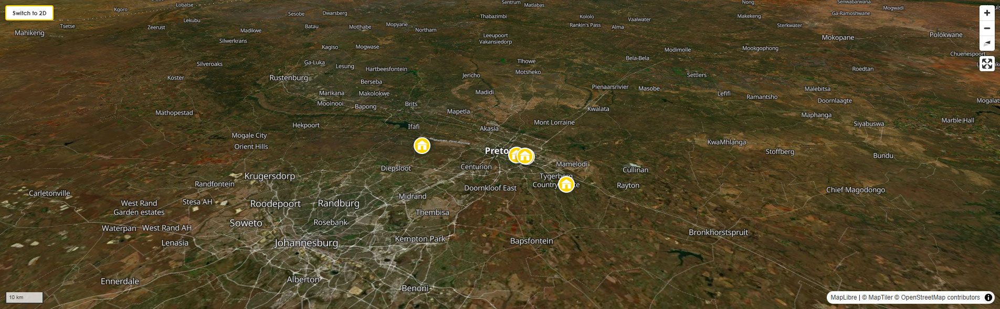

Backpacking Pretoria
Pretoria is not Johannesburg. This is the first and most useful thing to understand about it. Where Johannesburg is relentless — commercial, competitive, kinetic — Pretoria is administrative, measured, and, in October, purple. Somewhere between 65,000 and 70,000 jacaranda trees line the city's avenues and fill its gardens, and when they bloom in spring the effect is not subtle. The whole city turns violet. The streets are carpeted. The light through the canopy is like nothing in any other urban environment on earth. People fly to Pretoria specifically for this, and they are not wrong to.
Read More
It is also South Africa's capital — the executive capital, to be precise, one of three in a country with the unusual constitutional arrangement of splitting its governmental functions between three cities. The Union Buildings sit on a hill above the city, Herbert Baker's double-colonnaded sandstone masterpiece with the Nelson Mandela statue on the lawn, looking out over a city that has been the administrative centre of the country since 1910. This is where the President works. This is where Mandela took his oath of office in 1994. The weight of the place is visible even if you only see it from the road.
For backpackers, Pretoria is often either a day trip from Johannesburg or a first or last night before the Gautrain to the airport. Both of those are reasonable uses of it. But it rewards more than a single day, particularly if you are interested in the Afrikaner history that Johannesburg largely sidesteps, the Voortrekker Monument that is simultaneously one of the most architecturally extraordinary and most politically complex sites in South Africa, and the particular pace of a city that has not been trying to prove itself since 1886 because it never needed gold to justify its existence.
What Kind of Place Is This, Exactly?
Pretoria was founded in 1855 by Marthinus Pretorius, named in honour of his father Andries Pretorius — the Voortrekker leader who commanded the Boer forces at the Battle of Blood River in 1838. The city was built to be the capital of the South African Republic, the Boer state established by the Voortrekkers who had trekked north from the Cape Colony to escape British rule. This origin — emphatically Afrikaner, emphatically not British — still shapes the city's character in ways that are not always obvious to visitors arriving from Johannesburg, which has a very different and much more cosmopolitan DNA.
Pretoria has a different pace from Johannesburg. It is slower, quieter, more residential in its feel even in the commercial areas. The University of Pretoria — one of the largest in Africa — gives the eastern suburbs, particularly Hatfield, a student energy that tempers the city's administrative solemnity. The large embassy community (Pretoria is home to more than 130 foreign embassies, making it one of the most diplomatically active cities in Africa) adds an international layer. The result is a city that is simultaneously very Afrikaner in its bones and very internationally diverse in its daily life — a combination that is more interesting, and more specifically South African, than it might sound on paper.
Since 2005, Pretoria has also been known by its alternative name, Tshwane — the name of the Ndebele chief who historically inhabited the area, and the official name of the metropolitan municipality. The renaming was and remains contested; many residents, particularly Afrikaner ones, continue to use Pretoria exclusively. Both names are in active use, sometimes simultaneously in the same conversation. For visitors, Pretoria is the name that will be understood everywhere.
The Jacarandas: The City's Defining Identity
The first two jacaranda trees were planted in Pretoria in 1888, imported from Brazil. The city took to them with an enthusiasm that has produced, by most counts, somewhere between 65,000 and 70,000 trees today — lining every major avenue, filling the parks and gardens, spilling over the walls of the older residential suburbs. In October, they bloom simultaneously, and the transformation of the city is genuinely extraordinary: the avenues become purple tunnels, the gardens are violet clouds, the pavements are carpeted in fallen blossoms. On a clear October morning, looking out from the ridge near the Union Buildings over a city filled from horizon to horizon with purple trees, you understand why this is one of the things people in South Africa mention most often when they talk about where they have been and what they have seen.
The bloom is weather-dependent — it typically peaks in late October and can arrive a week or two earlier or later depending on the season. The white jacaranda, a sterile genetic variation that exists in only a handful of locations, can be found on Herbert Baker Street in Waterkloof. It is worth seeking out; the contrast against the purple of every surrounding tree makes it seem almost supernatural. The University of Pretoria campus is one of the best places to experience the full bloom — the trees on the campus are old, large, and planted in grids that create perspectives the city's streets cannot match. The annual Jacaranda Festival celebrates the season, though in recent years the events have been decentralised across various venues in the city rather than concentrated in a single location.
Understanding the City: Where to Be and Why
Pretoria is, like Johannesburg, a city that requires a considered approach to geography. It is more compact than Joburg and considerably easier to navigate, but it still operates on a hub-and-spoke basis for tourists: choose your neighbourhood carefully, move between destinations by Uber, and understand which areas are not appropriate for independent wandering.
Hatfield: The Backpacker Hub
Hatfield is where you stay. This is not a close-run decision. The eastern suburb that houses the University of Pretoria and the majority of Pretoria's foreign embassies is the right base for virtually every backpacker visiting the city — and every experienced Pretoria traveller will tell you the same thing. The reasons are straightforward: Hatfield has its own Gautrain station (the most Gautrain-connected tourist suburb outside of Johannesburg's northern suburbs), a walkable strip of restaurants, bars, coffee shops, and supermarkets on Burnett Street and around Hatfield Square, all the city's backpacker hostels within easy reach, and an ambient security level — thanks to the embassy presence and the university campus police — that is significantly higher than the CBD. It is not a central neighbourhood in the traditional city-centre sense, but in Pretoria's geography it is, for a tourist, the most functional and most secure operating base.
Hatfield Square — the commercial hub of the suburb — is a compact outdoor shopping and entertainment precinct with restaurants, a cinema, sports bars, and the kind of student energy that makes early evening feel alive rather than empty. The Springbok Bar on Hilda Street, the Eastwoods Tavern on Eastwood Street, the various café options around the square — these are the social infrastructure of the Pretoria backpacker scene, and they are all walkable from every hostel on the Arcadia Street cluster.
Arcadia: Embassy Row and the Transition Zone
Immediately west of Hatfield, Arcadia is the embassy district — a wide-avenued, tree-lined residential suburb where the diplomatic missions of more than 130 countries maintain their premises. The streets around Arcadia Street itself are quiet, orderly, and heavily surveilled by embassy security. Most of Pretoria's backpacker hostels have their postal addresses in Arcadia or on the Arcadia-Hatfield boundary, which puts guests within walking distance of both the Hatfield social scene and the older, quieter streets of the embassy district. The transition from Arcadia toward the CBD — heading west — is where the environment changes and where independent wandering requires more caution.
Brooklyn and Menlo Park: The Affluent East
East and south-east of Hatfield, the suburbs of Brooklyn and Menlo Park are Pretoria's most affluent and, by most assessments, safest residential areas. Brooklyn Mall and the streets around it offer a good selection of restaurants, coffee shops, and independent stores in a pedestrian-friendly environment. The Hazel Food Market, held every Saturday at the Hazel Food Market venue in Lynnwood (a short Uber from Brooklyn), is one of the best markets in the city — artisanal and organic produce, craft food vendors, and a relaxed outdoor environment. For a half-day of good coffee, interesting food stalls, and low ambient stress, Brooklyn and Menlo Park are the right destination.
The CBD and Church Square: History, Caution Required
Church Square — the historic heart of Pretoria, flanked by the Palace of Justice (where Nelson Mandela stood trial before being sent to Robben Island) and the Old Raadsaal — is a genuinely significant site, and the architecture around the square is among the most impressive Victorian and Edwardian civic building in South Africa. It is worth visiting. It is worth visiting on foot, in the company of others, during business hours, with your phone in your pocket and your bag zipped. The CBD itself — the streets extending from Church Square in all directions — has a mixed safety profile. During the day, the commercial streets are busy and manageable. At night and on weekends, they are not. Use your hostel's advice on which specific routes to the square are current best practice; the situation in the CBD shifts over time and local knowledge is more useful than any printed guide.
Sunnyside: Do Not Stay Here
This needs to be said clearly. Sunnyside — immediately south of Arcadia, and the suburb that appears in some older travel resources as a "nightlife district" and "backpacker area" — is listed in the latest SAPS crime statistics for 2024/2025 as one of Pretoria's most dangerous suburbs, with elevated levels of attempted murder, serious assault, sexual offences, and common robbery. It has the reputation, among Pretoria residents, of being the hijacking and drug distribution hub of the city. No backpacker hostel that recommends Sunnyside for nightlife or accommodation in 2025 is giving you accurate current information. Do not stay in Sunnyside. Do not walk its streets at night. If you pass through it by Uber en route to something else, keep the windows up.
The Two Histories: What Pretoria Asks You to Hold Simultaneously
More than almost any other city in South Africa, Pretoria asks visitors to hold two contradictory histories at the same time. The Voortrekker Monument — an enormous granite edifice on a hill south of the city, built in 1949 to commemorate the Afrikaner settlers who trekked north from the Cape in the 1830s — is a monument to a people who saw themselves as chosen, as pioneers, as rightful inheritors of a land that had been traversed by indigenous communities for thousands of years before they arrived. The Hall of Heroes inside the monument, with its marble frieze depicting the Great Trek in exhaustive detail, is one of the most complete expressions of Afrikaner nationalist mythology in physical form anywhere in South Africa. It is also, architecturally and historically, extraordinary: you cannot understand modern South Africa without understanding what it represents and who built it and why.
Three kilometres away, on a hill facing the Voortrekker Monument across the valley, Freedom Park — opened in 2007 — commemorates all those who died in South Africa's various conflicts, from the pre-colonial era through the wars of resistance against colonialism, through the Anglo-Boer Wars, through apartheid. The Wall of Names lists over 75,000 people who died in these conflicts. The eternal flame, lit by Thabo Mbeki at the opening, burns on a site that was chosen specifically for its sight-line to the Voortrekker Monument — a deliberate visual conversation between the two memorials across the valley that separates them. Standing at either site and looking at the other is one of the most quietly powerful experiences in South Africa. Neither monument cancels the other. Both are true. The country they together describe is the country you are in.
Pretoria vs Johannesburg: Two Days or One?
The Gautrain connects the two cities in 35 minutes. For travellers based in Johannesburg's northern suburbs, Pretoria is a natural full-day excursion: morning Gautrain to Hatfield, Union Buildings and the gardens, lunch in Brooklyn, afternoon at the Voortrekker Monument or Freedom Park, evening Gautrain back. This works well and is the itinerary that most Johannesburg-based backpackers follow.
For travellers who want more, staying two nights in Pretoria is worthwhile — particularly in October during the jacaranda season, or if the National Zoological Gardens (one of the largest in the world) or the Ann van Dyk Cheetah Centre are on the itinerary. The city is calmer than Johannesburg, the hostels are excellent and very reasonably priced, and the combination of the two cities — different in almost every way — gives you a more complete picture of Gauteng than either provides alone.
Pretoria FAQs For Backpackers
When is the best time to visit?
October is the unambiguous answer for the jacaranda bloom, and it is the single most specific reason to choose a particular month to visit Pretoria. The city transforms. Book accommodation early if you are coming specifically for the jacarandas — October is in high demand. The bloom peaks in the last two weeks of October in most years, though it can run into early November or begin in late September depending on rainfall and temperature.
September to November is the sweet spot overall: warm (22–28°C), low humidity, clear skies, and the jacaranda season filling much of it. The highveld thunderstorms arrive from November and can reorganise afternoon plans into December.
Winter (June–August) is dry and sometimes cold at night — Pretoria sits at 1,339 metres above sea level, and winter mornings can be near freezing. The days are typically sunny and 18–22°C, and the crowds are thinner. For the Voortrekker Monument and Freedom Park, both outdoor-adjacent experiences, a clear winter day is actually very good.
How do I get from OR Tambo Airport to Pretoria?
By Gautrain. This is the answer, and it is a very good answer. The Gautrain runs from OR Tambo International Airport to Hatfield station in Pretoria in approximately 55–60 minutes, with a change at Marlboro or Sandton for the Pretoria line. It runs every 12 minutes during peak hours, every 20 minutes off-peak. Buy a Gautrain card at the airport station (loaded with credit) before boarding. The fare from OR Tambo to Hatfield is approximately R80–R100. All major hostels in Hatfield are within a 10-minute walk or a very short Uber ride from Hatfield station. This is a significantly better option than any metered taxi from the airport, which will cost five times as much and involves handing your destination address to a driver you don't know.
Lanseria Airport, used by some domestic and regional carriers, is approximately 53km from Pretoria and is not on the Gautrain network. Use an Uber from Lanseria — confirm the pickup location on the app before exiting the terminal.
Is Pretoria easier to navigate than Johannesburg?
Yes, significantly. The city is smaller, the tourist attractions are more contained, and the Hatfield hub is genuinely walkable within its own boundaries in a way that Johannesburg's northern suburbs are only partially. Uber remains the right transport tool between destinations — the Voortrekker Monument, Freedom Park, the National Zoo, and the Union Buildings are all at least 5–15 minutes from Hatfield by car — but the ambient anxiety of Johannesburg's hub-and-spoke model is less acute here. That said: the same basic rules apply. The CBD is not a place for casual independent foot exploration. Sunnyside is a no-go. After dark, Uber between destinations regardless of distance. The tolerance for casual inattention is higher than in Joburg but is still not European.
Can I visit Johannesburg as a day trip from Pretoria?
Yes, and the Gautrain makes it frictionless. Hatfield station to Rosebank or Sandton in Johannesburg takes 35 minutes on a fast, clean, entirely safe train that runs frequently throughout the day. The Johannesburg attractions most relevant to backpackers — the Apartheid Museum, Maboneng, Soweto, Explorer Backpackers in Parkhurst — are all accessible from Rosebank or Sandton by Uber in 15–30 minutes. A day trip that starts at 8am and returns to Pretoria by 8pm comfortably covers the Apartheid Museum and a Soweto guided tour, which together constitute the essential Johannesburg experience. Your Pretoria hostel will have advice on how to structure this — most of them do it routinely.
What language will I hear?
Pretoria is more Afrikaans in its daily texture than Johannesburg — the city's Afrikaner history is present in the street names, the architecture, and the conversations you overhear in the older residential suburbs. Afrikaans and English alternate freely in shops, restaurants, and the hospitality industry. Setswana and Sepedi are the dominant languages in the townships to the north and east. In Hatfield, where the university student population and the international embassy community create a multilingual environment, English is the primary operating language and is spoken by virtually everyone you will need to interact with.
A few useful local phrases: lekker (enjoyable, good, nice — universal), braai (barbecue — the national religion), boet (friend, mate — from the Afrikaans for "brother"), howzit (hello, how are you — South African English, universally understood), eish (all-purpose expression of mild despair or surprise), yebo (yes, agreed — from isiZulu but widely used). Use them freely. They are invariably received with warmth.
What is the Voortrekker Monument and should I go?
Yes, you should go — and you should go knowing what it is before you arrive rather than discovering it on the spot.
The Voortrekker Monument is a massive granite structure, 62 metres high, built between 1938 and 1949 on a hill overlooking Pretoria to commemorate the Boer settlers — the Voortrekkers — who left the Cape Colony in the 1830s in the Great Trek, crossing the Orange and Vaal Rivers into what is now the Gauteng and KwaZulu-Natal provinces. The marble frieze inside the Hall of Heroes runs 92 metres around the interior walls, depicting the Trek in continuous narrative from departure to the Battle of Blood River in 1838 — where approximately 470 Boers, having made a covenant with God that they would keep the date holy if they survived, defeated a Zulu force estimated at several thousand men without a single Boer casualty. Once a year, on 16 December (the Day of the Covenant, now the Day of Reconciliation), a shaft of sunlight falls through a hole in the dome to illuminate the words "Ons vir jou, Suid-Afrika" (We for thee, South Africa) on the cenotaph below.
The monument is architecturally extraordinary, historically significant, and politically complicated in a way that is deeply illuminating about South Africa's past and present. The Afrikaner nationalism it represents was the ideology that produced apartheid. The monument was built during the same years apartheid was being legislated. None of this is hidden; none of it is simple. Entry approximately €5. The views from the surrounding hilltop over Pretoria are excellent at any time of year, and the jacaranda season makes them extraordinary.
What are the good restaurants and bars, and where are they?
The eating and drinking scene is concentrated in Hatfield, Brooklyn, and Menlo Park. In Hatfield, the strip around Hatfield Square and Burnett Street has the widest range: from the Springbok Bar (reliable sports bar, good steaks, reliably busy on match days) and the Blue Room (sports bar by day, club atmosphere by night) to the café strip along Hilda Street where the coffee is good and the student crowd makes the afternoons sociable. Eastwoods Tavern in Arcadia — a long-running Pretoria institution — does excellent pizzas and has multiple screens for sport.
In Brooklyn, the area around Brooklyn Mall and the streets running south from it have a concentration of restaurants covering most cuisines at prices that are very accessible by European standards. For a sit-down dinner that doesn't feel like a student canteen, Brooklyn is the better choice than Hatfield. The Hazel Food Market in Lynnwood (Saturdays) is the best food experience in the city — see the Things to Do section. For craft beer, the Lynnwood suburb has a growing brewery and tap room scene that has developed significantly in the last five years.
Is load shedding a problem in Pretoria?
The same as Johannesburg: Pretoria is in Gauteng, and Gauteng generally absorbs more of the national load-shedding burden than the Western Cape. In 2024–2025, extended Stage 0 periods reduced the impact significantly, but the underlying infrastructure remains fragile. Download the EskomSePush app — it schedules outages up to two weeks ahead, suburb by suburb. Good news specific to Hatfield: the 1322 Backpackers International, one of the main hostels, installed solar in recent years and is specifically advertised as "no more load shedding." Check whether your chosen hostel has backup power before booking if this is a concern.
Can I visit Mamelodi Township?
Mamelodi — Pretoria's largest township, to the east of the city — has a rich cultural and political history, and a jazz scene that deserves its reputation. Atteridgeville, to the west, is widely described as the jazz capital of South Africa, with live music venues and taverns running on weeknights and weekends. Both are worth visiting — both require a guided tour with a community-based operator who has current, specific local knowledge. Mamelodi East appears in the 2024/2025 SAPS crime statistics among Pretoria's most dangerous areas for violent crime. That does not mean it should not be visited; it means it should not be visited alone or without a guide. Your hostel will have recommendations.
What does it cost?
Pretoria is one of the cheapest cities in South Africa for backpackers. A dorm bed in Hatfield: R150–R280 (approximately €7–€13). A good sit-down meal: €5–€10. A craft beer in a Hatfield bar: €1.50–€2.50. An Uber from Hatfield to the Voortrekker Monument: approximately €3. Entry to the Voortrekker Monument: approximately €5. Freedom Park: approximately €4. The National Zoo: approximately €8. The Gautrain from OR Tambo to Hatfield: approximately €5. The Gautrain from Hatfield to Sandton (for a Joburg day trip): approximately €3. Pretoria is cheaper than Johannesburg, quieter, and significantly more at ease with itself as a city. For backpackers on tight budgets who want more than a transit stop, it offers exceptional value.
Safety In Pretoria
Pretoria is meaningfully safer than Johannesburg for a backpacker who stays in the right areas — and that distinction matters. The Hatfield-Arcadia-Brooklyn zone, where virtually all tourist accommodation is concentrated, has a substantially lower ambient crime risk than Johannesburg's inner city. The hub-and-spoke approach is still required, and the same fundamental rules apply — Uber between destinations, phone in pocket, ATMs inside malls only — but the baseline level of vigilance required is lower. Many travellers who found Johannesburg exhausting find Pretoria relaxing by comparison. This is appropriate: it genuinely is.
That said: Pretoria is not a low-crime city. It has the fourth-highest crime index among major South African cities, and its most dangerous suburbs are among the most dangerous in the country. The key is that those suburbs are not where backpackers stay or need to go. Know the geography, follow the rules below, and your experience will almost certainly be trouble-free.
Safe Areas For Tourists
Hatfield and Arcadia (the hostel zone): The right base for virtually all backpackers. The embassy presence on Arcadia Street creates a security environment well above the city average — embassies maintain their own perimeter security and generate a police presence on the surrounding streets. The Hatfield student environment means consistent foot traffic during the day and early evening. Walk freely in the immediate Hatfield Square and Burnett Street area during daylight and early evening; use Uber for anything further afield after dark.
Brooklyn and Menlo Park: Affluent, well-policed, and walkable in the immediate retail and restaurant areas during the day. Standard precautions on quieter residential streets after dark.
Waterkloof and Groenkloof: Among the safest residential areas in Pretoria, though primarily residential rather than tourist-destination oriented. The Groenkloof Nature Reserve, within the Groenkloof suburb, is one of the few urban game reserves in the world where you can see giraffe and cheetah from a suburban road. Safe during daylight hours.
The Union Buildings precinct: The official seat of the South African government is extensively secured. The gardens and grounds are open to the public and are safe to walk during opening hours. The surrounding Meintjieskop area — the ridge on which the buildings sit — is fine during the day but isolated enough to warrant an Uber rather than a late-evening walk.
No-Go Areas For Independent Tourists
Sunnyside: The single most important no-go area for visitors to Pretoria. Despite appearing in some older travel resources as a nightlife destination, Sunnyside is listed in the most recent SAPS crime statistics (2024/2025) as one of Pretoria's most dangerous suburbs — attempted murders, serious assaults, and sexual offences. Local residents describe it as the hijacking and drug distribution hub of the city. Do not walk here at any time of day. Do not go out at night here. If you are travelling through it by Uber, keep windows up. Some of the older hostels in the Sunnyside area have closed for this reason; if a hostel address places you in Sunnyside rather than Hatfield or Arcadia, reconsider your booking.
The CBD beyond Church Square: Church Square itself — and the immediate precinct of historic buildings around it — is manageable during business hours with appropriate awareness. The streets extending from the CBD in all directions, particularly west and north of the square, deteriorate rapidly in terms of ambient safety. Do not wander the CBD independently. Visit Church Square specifically, by Uber or in a group, during the day. Do not attempt to explore the CBD at night.
Mamelodi (independently): One of Pretoria's largest townships, to the east of the city. Mamelodi East is in the SAPS crime statistics among Pretoria's most dangerous areas. Guided township visits are worthwhile; independent wandering is not appropriate. Your hostel will have community-based tour recommendations.
Atteridgeville (independently): The township to the west of the city, famous for its jazz scene. Worth visiting for the music — with a guide or with a local who knows the current situation. Not appropriate for independent exploration.
Akasia and Temba (northern areas): Consistently identified in crime statistics as high-risk. These northern suburbs and peri-urban areas are not tourist destinations and have no practical reason to be visited by a backpacker.
The N1 and R80 highway corridors at night: The Tshwane Metro Police specifically identifies smash-and-grab incidents on the R80 (Mabopane highway) and around the Fountains Circle interchange. When driving, keep windows up in slow traffic and do not leave bags visible on seats.
Your Phone: The Universal Rule
Phone snatching operates in Pretoria as it does across all of Gauteng — motorbike riders targeting people walking with phones visible, opportunistic theft at outdoor café tables, grabs at pedestrian crossings. The rule is the same everywhere in South Africa: phone in your pocket on the street. Check your map before you leave, use it inside a building. A crossbody bag with a zip rather than a backpack with external pockets.
Carjacking: Specific Locations And Habits
Carjacking in Pretoria is concentrated at traffic lights in high-crime areas (Sunnyside, parts of the CBD, the N1/R80 corridors), in underground parking structures, and on quiet residential streets after dark. The same habits as in Johannesburg apply: windows up at red lights in unknown areas, doors locked, do not stop on empty streets after dark. The Hatfield and Brooklyn areas have low carjacking incidence by Pretoria standards — the risk is elevated in the specific areas already identified as no-go zones.
UBER: Use It, Confirm It, Trust It
Uber and Bolt are the correct transport tools for all inter-neighbourhood movement in Pretoria. Confirm driver name and plate number before entering any vehicle. Book from inside your hostel or a building rather than on the street. The tension between Uber and metered taxi drivers that exists at Johannesburg's OR Tambo also occasionally surfaces at Pretoria Central station — if you arrive by intercity bus, book your Uber before exiting the building. Pretoria Central is safer than Johannesburg's Park Station but warrants the same practice: go directly from building to confirmed Uber, do not assess the street environment on foot with your bags.
Loftus Versveld And Match Days
Loftus Versfeld, the famous rugby ground and multi-purpose stadium a short walk from most Hatfield hostels, generates significant foot traffic on match days. The approach routes to the stadium — through the Arcadia and eastern Sunnyside streets — see elevated crime immediately before and after evening matches, as opportunists work the crowds of spectators walking to and from the ground. Take an Uber to the stadium for evening matches, even though it is technically walkable from Hatfield. The difference in risk between walking and being dropped at the gate is not trivial on a busy Saturday night. Most hostels in the area are aware of this and will advise you directly.
Things To Do In Pretoria
1. The Voortrekker Monument and Freedom Park: The Conversation Across the Valley
There is no better way to begin understanding South Africa than to spend a morning at these two memorials on their facing hills — and to visit them in the right order: the Voortrekker Monument first, Freedom Park second, with the valley between them in view from each.
Read More
The Voortrekker Monument, on its hill four kilometres south of the city centre, is one of the most architecturally extraordinary and politically significant structures in South Africa. The 62-metre granite building, completed in 1949, was built to commemorate the Boer settlers who trekked north from the Cape Colony in the 1830s to escape British rule. The marble frieze inside the Hall of Heroes runs 92 metres around the interior, depicting the Great Trek in continuous narrative from start to finish — the ox-wagons, the rivers crossed, the battles fought, the dead buried on the veld. Once a year, on 16 December, sunlight falls through a hole in the dome to illuminate the words on the cenotaph below: Ons vir jou, Suid-Afrika — We for thee, South Africa. The roof terrace offers one of the best panoramic views of the city. Allow two hours. Entry approximately €5. Arrive by Uber.
Understanding the monument requires holding the following in your head simultaneously: that the Afrikaner people who built it genuinely felt they were honouring courage, sacrifice, and faith; and that the ideology the monument expressed — Afrikaner nationalist exceptionalism — was precisely the ideology that produced apartheid. The monument was inaugurated in 1949, one year after the National Party came to power and began enacting the apartheid legislation. None of this is coincidence, and none of it is simple. The monument will not explain itself to you. That is part of the experience.
Then take an Uber three kilometres away to Freedom Park, on its own hill directly facing the Voortrekker Monument across the valley. The sight-line is deliberate. Freedom Park, opened in 2007, commemorates all who died in South Africa's conflicts from the pre-colonial era through colonialism, through the Anglo-Boer Wars, through apartheid, through the liberation struggle. The Wall of Names lists more than 75,000 people. The eternal flame burns on the summit. The museum inside, called //hapo (an IXam word meaning "I dream"), is one of the best-designed historical exhibitions in South Africa — immersive, multilingual, and unsparing about what South Africa has been and what it cost. Allow three hours for the full experience. Entry approximately €4.
Stand at Freedom Park and look across the valley at the Voortrekker Monument. Then go back in your mind to the Hall of Heroes inside it. Neither monument cancels the other. Both are true. The country they describe together is the country you are standing in — and understanding that is worth more than almost anything else you could do with a day in Pretoria.
2. The Union Buildings: The Seat of the Republic
Herbert Baker's double-colonnaded sandstone complex on Meintjieskop hill is one of the most beautiful government buildings in the world, and it is open to the public. The Union Buildings — completed in 1913, designed to symbolise the union of the British and Boer peoples after the Anglo-Boer War — have been the official seat of the South African presidency since their construction. Nelson Mandela took his oath of office on the steps facing the gardens in 1994. The 9-metre bronze statue of Mandela on the front lawn, the tallest statue of him on earth, looks north over the gardens and the city.
The terraced gardens are free to walk through during opening hours — formal lawns, rose beds, and a view over Pretoria that is arguably the city's best. The jacaranda season transforms this view into something genuinely extraordinary: a city of purple trees stretching in all directions below the red sandstone of the buildings. You cannot enter the government offices themselves, but walking the gardens and the terrace in front of Baker's colonnades, with that view and that history beneath your feet, is as close to the heart of the modern South African state as a visitor can get. Free entry to the grounds. Arrive by Uber; the approach road is straightforward. Best on a clear day, and magical in October.
3. Church Square and the Palace of Justice
Church Square is the Victorian heart of Pretoria — the original centre of the South African Republic, flanked by the Palace of Justice, the Ou Raadsaal (the old parliament), and a ring of Edwardian and Victorian commercial buildings that collectively represent some of the finest civic architecture in South Africa. The statue of Paul Kruger, President of the South African Republic, stands at the centre. It is simultaneously a beautiful square and a weighted one: the Palace of Justice is where Nelson Mandela and his co-accused stood trial in the Rivonia Trial of 1963–1964, at the conclusion of which Mandela was sentenced to life imprisonment. The building's role in that trial is noted on a commemorative plaque. The square is a 15-minute walk from the Palace of Justice to the holding cells where the accused were kept.
Visit Church Square during business hours, on a weekday, and exercise the standard CBD precautions described in the safety section — phone in pocket, no unnecessary stops on the surrounding streets. The square itself is busy and manageable. The architecture rewards a slow walk around the perimeter. Free to visit. Allow 45 minutes. Combine with a visit to the nearby Market@theSheds if your timing coincides with the first Saturday of the month.
4. The National Zoological Gardens
The National Zoological Gardens of South Africa is the largest zoo in the country and one of the largest in the Southern Hemisphere — 210 acres of grounds, approximately 9,000 animals of more than 700 species, and a cable car that climbs the hillside above the enclosures to give you a bird's-eye view of the layout below. The national status matters: this is the only zoo in South Africa with national designation, meaning it operates under a conservation mandate that goes beyond public display. Several species held here exist in no other captive facility on the continent.
For a backpacker who wants a first encounter with African wildlife before committing to a full safari, this is one of the most comprehensive options available in an urban setting. The big cats, the African wild dogs, the white rhinos, the giraffes moving through the upper enclosures while the Apies River runs below — the scale of the grounds gives the animals more space than most urban zoos, and the hillside topography means the experience never feels flat. The cable car is worth the small additional charge for the perspective it provides. Budget a full morning or afternoon — three to four hours minimum to see it properly. Entry approximately €8. Open daily 08:30–17:30. Located in the CBD-adjacent northern precinct — arrive and depart by Uber.
5. The Hazel Food Market (Saturdays)
In the suburb of Lynnwood, about 6km east of Hatfield, the Hazel Food Market runs every Saturday at 378 Queens Crescent and is the best market experience in Pretoria — better curated, more food-focused, and more local in character than most of the alternatives. Over 70 vendors occupy the grounds, selling artisanal cheeses, gourmet charcuterie, fresh produce, handmade bread and pastries, craft chocolates, biltong, craft beer, homemade preserves, bunny chow, Portuguese chicken, Greek mezze, Asian street food, and enough other things that a single circuit of the stalls becomes a tasting exercise. The quality is consistently higher than a farmer's market average; several of the vendors supply Pretoria's better restaurants during the week and do their direct-to-public selling here on Saturdays.
The outdoor setting — under mature trees in a pleasant residential suburb — adds to the appeal. This is not a tourist market; it is where Pretoria's food-conscious residents do their Saturday shopping and their Saturday socialising simultaneously. Arrive by 10am for the freshest produce and the best selection. The coffee, from one of the dedicated espresso stalls, is excellent. Budget R150–R200 (approximately €7–€10) and you will eat very well and take something home. Saturday mornings from approximately 08:00–13:00. Arrive by Uber from Hatfield (10 minutes, approximately R30).
6. Market@theSheds (First Saturday of Every Month)
Once a month, on the first Saturday, the 012central precinct at 381 Helen Joseph Street — a beautifully restored warehouse complex in the inner city, next to the South African Reserve Bank and the State Theatre — hosts Market@theSheds: Pretoria's most energetic and most musical market event. From 11:00 to midnight, more than 60 local vendors fill the sheds with fashion, art, handmade design, gourmet street food, and craft drinks, while a live music programme runs on two stages throughout the day and evening. After 17:30, the Sheds@Night afterparty takes over with DJs and a no-under-18 door policy, running until midnight.
The daytime portion is family-friendly and relaxed. The evening portion is specifically designed for a young adult crowd who want music, food, and a social space that feels genuinely alive rather than merely functional. The mix of Pretoria's creative community, university students, embassy staff, and passing international visitors produces a crowd that is notably more diverse than the northern suburbs' café scene. Early bird entry (before noon) is R50 for two tickets — worth timing your arrival for. Regular entry R100–R120 at the gate. Arrive by Uber to the 012central precinct; the organisers provide directions to the free safe parking at 216 Sisulu Street if you have a vehicle. Check Market@theSheds on Instagram (@market_thesheds) for the exact date each month and the music lineup, which changes.
7. The Ann van Dyk Cheetah Centre
An hour's drive northwest of Pretoria, in the Magaliesberg mountain range near Hartbeespoort Dam, the Ann van Dyk Cheetah Centre is one of the most remarkable conservation facilities in Africa — and one of the most undervisited by backpackers, who tend to overlook it in favour of larger safari options. It was the world's first facility to breed captive cheetahs on a sustainable basis, established in 1971, and has since bred more than 800 cheetah cubs. It is also the world's first CITES-approved cheetah breeding facility. But the day-to-day experience of visiting it goes well beyond the statistics.
The two-hour guided tour takes you by open safari vehicle through the breeding camps — past cheetahs that cannot be released into the wild but live in spacious, well-maintained enclosures, and through the African wild dog packs, which are Africa's second most endangered carnivore and which the Centre has been breeding successfully for release since the 1980s. The cheetah run, offered on specific mornings, involves the guides releasing a cheetah along a track to trigger the animal's sprint instinct — watching a cheetah cover 50 metres in under three seconds, from open ground level, resets your understanding of what speed means. Tours run daily; the cheetah run is on Sunday and Wednesday mornings at 8:00am and requires advance booking. Standard tour entry approximately €15–€20. The Centre receives no government funding and relies entirely on tour income and donations — your visit directly supports the conservation work.
Two recent British visitors booked a Pretoria Uber for the return trip — approximately R350 each way, split between two, so R175 per person each way — and described it as one of the best-value wildlife experiences of their South Africa trip. The Centre's own tour operators offer pickup from Pretoria and Johannesburg addresses at around R2,500 for the package including transport; for groups of three or more, self-driving or Ubering independently and paying gate entry is significantly cheaper. Advance booking essential; call or book online at dewildt.co.za.
8. The Pretoria National Botanical Garden
Five kilometres east of the city centre, the 76-hectare Pretoria National Botanical Garden is one of South Africa's nine national botanical gardens and one of the most diverse — a 50-metre quartzite ridge divides the grounds into two climatically different sections, with the cooler south-facing slope supporting different species from the warmer north-facing one, producing a garden that contains examples of almost every South African biome from fynbos to savanna to forest. More than 220 bird species have been recorded here, including sunbirds, kingfishers, and raptors. The small mammals — common duiker, scrub hare, slender mongoose — move freely through the grounds and are often visible on the quieter trails.
In September and October, the aloe and protea collections flower simultaneously with the jacaranda season in the surrounding city, and the botanical garden becomes one of the most colourful environments in Gauteng. The Milkplum Café inside the grounds is open daily and serves a good lunch under a canopy of indigenous trees. The braai area (charcoal provided) can be booked for a picnic with an open fire — a specifically South African afternoon activity that costs almost nothing and delivers a lot. Entry approximately R70–R90 (about €3–€4) depending on the season. Open 08:00–18:00 daily. Arrive by Uber from Hatfield (15 minutes).
9. Hidden Gems
Groenkloof Nature Reserve — Wildlife Inside the City:
Five kilometres south of the city centre, adjacent to the Fountains Valley resort, Groenkloof holds a distinction that almost no urban nature reserve anywhere in the world can match: it is the first formally proclaimed game sanctuary in Africa, established in 1895 — three years before the Kruger National Park. The 1,400-hectare reserve, accessible from the Groenkloof suburb and less than 15 minutes by Uber from Hatfield, contains zebra, wildebeest, giraffe, kudu, brown hyena, caracal, and more than 40 other mammal species within the Pretoria city boundary. You can run from your hostel and pass a giraffe on your morning jog. This is not a metaphor. Fourteen kilometres of designated hiking and mountain bike trails run through the reserve. Entry is free. It is one of the most consistently underrated things Pretoria has to offer, and almost no tourist guidebook mentions it adequately. Go. Take the Krokodilberg trail (10km) for the full experience, or the Dassie trail (2.5km) if you want a shorter walk with still-reliable wildlife sightings.
Melrose House Museum:
A grand Victorian mansion on Jacob Mare Street, built in 1886, that most visitors to Pretoria walk past without knowing what it is. Melrose House was where the Treaty of Vereeniging was signed in May 1902 — the document that ended the Anglo-Boer War and defined the terms under which the Boer republics became part of the British Empire. The British military commander Lord Kitchener used the house as his headquarters during the final months of the war. The interior is preserved with the original furniture, paintings, and domestic objects of the 1880s–1900s in a way that genuinely transports you: the dining room is set for a dinner that will never happen, the parlour chairs are positioned for a conversation that ended in 1902. The garden is beautiful. Entry is very cheap (approximately R20). Allow 45 minutes. It is located in the CBD-adjacent area — Uber from Hatfield, visit during business hours.
Fort Klapperkop Military Museum:
On a rocky hilltop in Groenkloof, overlooking both the city and the Voortrekker Monument across the valley, Fort Klapperkop is one of four forts built by the South African Republic in the 1890s to defend Pretoria — and the only one still intact. The fort was never used in battle: it was completed in 1898, the Anglo-Boer War began in 1899, and the British occupied Pretoria without the fort firing a shot. The irony is built into the architecture. The military museum inside is small but well-maintained, with exhibits covering the Anglo-Boer War, World War I, and World War II. The real reason to come is the hilltop — the 360-degree views of Pretoria are exceptional, and on a clear October morning with the jacarandas below, you will take the best photographs of the city from this vantage point. Entry approximately R20. Almost nobody goes here, which is a reliable indicator that it is worth going.
The Austin Roberts Bird Sanctuary:
A 29-acre wetland bird sanctuary in the Walkerspruit open space system in Muckleneuk, named after J. Austin Roberts — the ornithologist who wrote the definitive field guide to southern African birds, Roberts Birds of Southern Africa, which is still in print in its ninth edition. The sanctuary harbours more than 170 species, including reed cormorants, African jacanas, malachite kingfishers, and Egyptian geese breeding on the wetland edges. An exhibition hall at the entrance provides context on Roberts' life and work. This is not a manicured garden with a viewing platform. It is a functioning wetland where the birding is genuinely excellent and the only other people you will encounter are the local birders who have been coming here for years and know where everything nests. Entry is free. Almost entirely unknown to tourists.
The White Jacaranda, Herbert Baker Street:
On Herbert Baker Street in Waterkloof, among the several thousand purple jacarandas that line the avenues of the suburb, there is a single white one. A sterile genetic variation, it cannot reproduce, and its white flowers against the purple of every surrounding tree make it look like a mistake that turned out to be the most beautiful thing on the street. October only. It is not marked on any map. Ask a local; they will know exactly where it is. Free, obviously.
Diep in Die Berg:
A genuinely hidden café in Pretoria East — "Deep in the Mountain" in Afrikaans — that has developed a word-of-mouth following among young Pretoria residents as the kind of place that rewards the effort of finding it. Set in a natural hillside environment with outdoor seating built around the landscape rather than imposed on it, it offers good coffee and food in a setting that bears no resemblance to the commercial café strip of Hatfield Square. Deliberately difficult to find by design; ask your hostel for current directions, as it does not widely publicise its location. This is a place for a slow afternoon, not a quick stop.
10. Free Things to Do
The Union Buildings gardens (free): The terraced gardens below Herbert Baker's sandstone colonnades are open to the public and are Pretoria's best vantage point over the city. Free. Exceptional in October. Arrive by Uber.
Groenkloof Nature Reserve (free entry): Africa's oldest proclaimed game sanctuary, inside the city boundary. Fourteen kilometres of hiking and mountain bike trails, with giraffe, zebra, wildebeest, and kudu. Entirely free to enter. The most underrated free activity in Pretoria.
Austin Roberts Bird Sanctuary (free): A functioning wetland with 170+ bird species in Muckleneuk. Free, and almost entirely unknown to tourists. Bring binoculars if you have them.
Church Square (free): The Victorian heart of the city — the Ou Raadsaal, the Palace of Justice, the Paul Kruger statue, and the architecture of the former South African Republic, all free to walk around. Visit during business hours with standard CBD awareness.
The University of Pretoria campus during jacaranda season (free to walk): The UP campus has the most spectacular jacaranda display in the city — old, large trees planted in grids that create perspectives unavailable on the public streets. October only. The campus is open to visitors on foot during the day. Walk in from the Hatfield gate.
Faerie Glen Nature Reserve (free): A 204-hectare rocky ridgeline reserve on the eastern edge of Pretoria, with hiking trails, over 150 bird species, and views that on a clear day extend to the Magaliesberg. Particularly good for birding and photography in the early morning. Picnic baskets are permitted (no braais). Dog walking requires a permit, available at the gate. Free entry.
Melrose House garden (almost free): The Victorian garden of Melrose House is accessible with the very inexpensive museum entry. Worth it purely as a quiet space to sit outside the noise of the CBD, in a garden that has been there since 1886 and is maintained as it was then.
The Pretoria Art Museum, Arcadia (free or very cheap): In Arcadia Park, a short walk from most Hatfield hostels, the Pretoria Art Museum holds one of the country's best collections of South African art, including works by Irma Stern, Pierneef (whose landscapes of the Highveld are the defining images of the Afrikaner relationship to the land), and a comprehensive survey of contemporary Black South African art. Entry is very cheap or occasionally free on specific days. Undervisited and well worth an hour.
11. Day Trips from Pretoria
Hartbeespoort Dam (40 minutes):
The Hartbeespoort Dam — "Harties" to everyone who lives within an hour of it — sits in the Magaliesberg mountains 40km northwest of Pretoria and is the recreational lung of Gauteng: boat trips, zip lines, horse riding, quad biking, cable cars over the dam, and the restaurant strip along the dam wall where you can eat a plate of fish and chips watching the water. It is not a hidden gem — every Pretoria and Joburg family has been here repeatedly — but for a visitor from Europe it delivers a specifically South African leisure experience. The Hartbeespoort Aerial Cableway (cable car up the mountain, spectacular views of the dam and the Magaliesberg range) is the recommended highlight. Combine with the Ann van Dyk Cheetah Centre, which is a short drive further into the Magaliesberg. Hire car or day trip with a tour operator from your hostel.
Johannesburg as a day trip (35 minutes by Gautrain):
Already covered in the FAQs section. The Gautrain makes this effortless. Hatfield to Rosebank or Sandton in 35 minutes, then Uber to the Apartheid Museum, Soweto, or Maboneng. A full day in Johannesburg returns you to Pretoria the same evening with the essential experiences under your belt. Your Pretoria hostel will have advice on the optimal day-trip itinerary; most of them have done it many times.
The Cradle of Humankind (50 minutes):
Detailed in the Johannesburg guide. Equally accessible from Pretoria — the drive is 50 minutes southwest via the N14. The Sterkfontein Caves and the Maropeng Visitor Centre, on the site where more than a third of the world's known hominid fossil record has been found. One of eight UNESCO World Heritage Sites in South Africa. The combination ticket (Maropeng plus caves) costs approximately €18. Hire car or organised day trip.
12. Live Sport: Rugby at Loftus Versfeld
There is one sporting experience in Pretoria that belongs on any serious backpacker's list, and it is not negotiable: a Bulls match at Loftus Versfeld.
The Vodacom Bulls and Loftus Versfeld:
Loftus Versfeld has been the home of Pretoria rugby since 1910. The current stadium holds approximately 51,762 spectators and has been continuously expanded and upgraded over its 114-year history, most recently with the renovation that preceded the 2023 Rugby World Cup. The Bulls — Pretoria's professional rugby franchise, competing in the United Rugby Championship and the Investec Champions Cup — are one of the most decorated club sides in the southern hemisphere: three Super Rugby titles, consistent URC competitors, and the producers of more Springbok players per season than almost any other franchise in the world. South Africa are the current back-to-back Rugby World Cup holders, and a significant proportion of that squad wears blue at Loftus on weekends between international windows.
A Bulls home match at Loftus Versfeld is, in terms of atmosphere, something that requires direct experience to understand. The stadium is steep-sided and acoustically efficient in a way that concentrates crowd noise into a single wall of sound. The Pretoria rugby crowd is knowledgeable, loud, and tribal in the specific way of a city that has identified with a single sport at the level of civic religion for over a century. When a Springbok plays at Loftus in a Bulls jersey, the crowd's response is calibrated — this is a crowd that knows exactly who is on the field and what they have previously done. When the Bulls score in the corner at the open end, the entire stadium lifts simultaneously. If you have never been inside a full-capacity South African rugby stadium, the first time is a physical experience that no description adequately conveys.
The current schedule: The URC season runs roughly September through May, with home matches at Loftus approximately every two to three weeks. The 2025–2026 Loftus home fixtures include Cardiff (20 March), Munster in the Champions Cup (28 March), Zebre Parma (9 May), and Benetton (16 May). A Springbok test match against New Zealand at Loftus is also confirmed for the 2026 season window — check the SA Rugby website for the date, and book early if it falls within your visit: Springbok test matches at Loftus sell out weeks in advance and the atmosphere is categorically beyond anything in a regular club fixture.
Practical information: Tickets via Ticketmaster or directly at bullsrugby.co.za. General stand tickets for club URC matches start from approximately R150–R250 (€7–€12) — genuinely cheap by European rugby standards for a match of this quality. The stadium address is Kirkness Street, Sunnyside — which is, as noted in the safety section, in the Sunnyside suburb. Do not walk to the stadium from Hatfield regardless of the distance appearing manageable on a map; the approach streets through Sunnyside on match night are not appropriate for independent foot traffic. Take an Uber to the Loftus Park entrance (specify this entrance to your driver — it is the safest drop-off point) and book your return Uber before the match ends, while you are still inside the ground with signal and time. Waiting for an Uber on the Sunnyside street after a night match with 51,000 people dispersing around you is not the right context for managing the app. Plan ahead. Alcohol is not permitted inside the stadium; drink beforehand at your hostel or at one of the Hatfield Square bars. The stadium has food and soft drink stalls throughout.
If rugby is not your sport: Loftus also hosts Mamelodi Sundowns football matches — South Africa's most successful PSL club, based in Pretoria, who have won the CAF Champions League and are perennial PSL champions. A Sundowns home match has a different but equally compelling crowd energy: brighter colours, more continuous singing, and the specific atmosphere of a club that has become the dominant force in African club football over the last decade. PSL tickets from approximately R80–R150 (€4–€7). Check the PSL fixture list and Sundowns' home match schedule before you arrive.
Pretoria Backpackers Hostels
Hostels listed on Booking.com and Hostelworld
ALL HOSTELS
Full contact details are included in case you want to book direct, plus useful info such as Safety Ratings and Value For Money, Solo Female Friendliness, and Digital Nomad scorecards.
Every listing below is independently researched and unsponsored. We review them all the same way -
the hostels do not pay us for advertising.
Did we miss a hostel? Email us at and we'll add it.
HATFIELD / ARCADIA
RURAL / OUT-OF-TOWN
PRETORIA BACKPACKERS
AREA: ARCADIA / CLYDESDALE — near Loftus Versfeld
STREET ADDRESS: 425 Farenden Street, Clydesdale, Pretoria, 0002, Gauteng, South Africa
GOOGLE MAPS: -25.75282, 28.22026
PHONE: +27 12 343 9754
WHATSAPP: N/A
EMAIL: info@pretoriabackpackers.net
WEBSITE: pretoriabackpackers.net
SOCIAL: Facebook
ACCOMMODATION TYPE: Dormitories (mixed), Double, Twin and Triple private rooms. Shared and en-suite bathroom options.
PRICE RANGE: Budget to mid-range. Dorm beds from ~R200–R320; private rooms from ~R650–R950.
Read More
GOOGLE RATING: ~4.4 / 5
VALUE FOR MONEY RATING: 4 / 5. Pretoria Backpackers punches well above its price point in the amenities-per-rand calculation. Free breakfast included daily — filter coffee and a hot meal, not just toast — plus a free shuttle to the Gautrain Hatfield Station, an outdoor pool, secure off-street parking, and the kind of hands-on owner attention that budget travellers in far more expensive cities would pay significantly more for. This is a family-run operation that genuinely includes things that most hostels charge extra for or don't offer at all. The rooms are not lavish, but everything works, everything is clean, and nothing costs extra that should be free. For the Pretoria budget traveller, the value proposition here is difficult to beat.
VIBE-METER: 45% Relaxed Family-Run Guesthouse / 30% Travellers' Lodge / 15% Safari Staging Post / 10% Embassy / NGO Worker. Pretoria Backpackers has the warmth and character of a family home rather than the anonymity of a managed hostel. The atmosphere is relaxed and unhurried — guests tend to linger over breakfast, use the pool, and chat on the stoep. It draws a mixed crowd: solo backpackers, couples, NGO workers passing through, and people using Pretoria as a gateway to Kruger. The owners — Marinda and Francois — are cited repeatedly in reviews by name, which tells you everything about the management style. This is not a party venue.
DECIBEL LEVEL: 2 / 5. The Clydesdale/Arcadia suburb is a quiet, established residential neighbourhood. The hostel is set back from the main road on Farenden Street, which carries minimal traffic noise. The immediate surrounds are leafy and peaceful. Even on match days at Loftus Versfeld (100 metres away), the noise is festive rather than disruptive and ends when the match does. The hostel itself does not host late-night events. Excellent for light sleepers.
KEY AMENITIES: Free full English breakfast daily (7–9 AM, filter coffee included), free shuttle to Gautrain Hatfield Station, outdoor swimming pool with loungers, secure off-street parking, in-house travel agency (safaris to Kruger, Johannesburg day tours, car hire at negotiated rates), free Wi-Fi, BBQ/braai area, TV with satellite channels in all rooms, daily housekeeping, laundry service, towels provided. Can accommodate up to 52 guests across dormitories, triples, doubles and twins. Central heating and air conditioning in all rooms.
NEARBY HIGHLIGHTS: Loftus Versfeld Stadium (100 metres — home of the Blue Bulls; match-day atmosphere is a Pretoria experience in itself), University of Pretoria (11 min walk), Union Buildings (2 km — Herbert Baker's masterwork and the site of Nelson Mandela's inauguration), Hatfield Plaza (5 min drive), Brooklyn Mall (10 min by car), Pretoria Art Museum (1.5 km), Melrose House Museum (5 km — where the treaty ending the Anglo-Boer War was signed), weekly farmers' market trip (free, organised by the hostel).
SOLO FEMALE FRIENDLINESS: 4 / 5. The family-run, owner-present model is one of the strongest indicators of solo female safety in any accommodation. Reviews from women travelling alone consistently mention feeling welcomed and looked after by name. The quiet residential neighbourhood is safe to walk during the day. The free Gautrain shuttle reduces the need to navigate transport alone. The in-house travel agency means activities can be arranged from the property rather than on the street. The main limitation: no female-only dorm listed. Recommend requesting a private room if travelling solo; prices are reasonable.
DIGITAL NOMAD FRIENDLINESS: 3 / 5. Free Wi-Fi, TV desks in rooms, and a quiet residential environment make this workable for remote workers on shorter stays. Not a dedicated work-friendly hostel — there is no co-working space or dedicated work infrastructure — but the general calm of the property and the reliable Wi-Fi make it functional. The Gautrain shuttle puts Cape Town-style co-working spaces in the Sandton/Johannesburg corridor within commuting reach.
SAFETY RATING: GREEN. The Clydesdale/Arcadia neighbourhood — while it borders the more challenging Sunnyside — is a well-established residential area with a low recent crime profile around the hostel itself. The property has secure perimeter fencing, off-street parking, and is owner-managed with the owners resident on-site. Multiple reviews from guests across a decade of stays report no security concerns. Standard urban vigilance applies beyond the immediate vicinity, particularly toward Sunnyside after dark.
MANAGEMENT STYLE: Owner-managed. Marinda and Francois are present, named by guests in reviews, and personally involved in the day-to-day operation. This is the defining quality of the hostel: a level of personal attention and accountability that is unusual in the budget accommodation sector. The hostel has operated for over 20 years in the same location under consistent management — a rare and reassuring indicator of a stable, well-run operation.
EMPLOYMENT ETHICS: POSITIVE. Long-serving local staff are mentioned warmly in reviews. A stable, owner-run operation with over 20 years of continuous operation in the same location suggests consistent employment practices. No adverse reports noted across review platforms.
THE BLURB: Pretoria Backpackers is the kind of place that makes you realise what a hostel can be when it's run by people who actually live there. It occupies a century-old house with original wooden floors and pressed ceilings, 100 metres from Loftus Versfeld — meaning that on Blue Bulls match days, the entire neighbourhood becomes a sea of blue and white and you can walk to the stadium in two minutes. Marinda and Francois will organise your safari to Kruger at a price that undercuts anything you'll find online, drive you to the Gautrain themselves, and make sure you have a hot breakfast before you leave. The pool is cold and clean, the braai area is for lingering, and the weekly farmers' market trip is the kind of quiet social event that travellers remember long after they've forgotten the party hostels. It is not the flashiest option in Pretoria. It is the most cared-for.
FINAL VERDICT: The most warmly-managed hostel in Pretoria — family-run, genuinely excellent value with free breakfast included, and a perfect staging post for Kruger-bound travellers. Book directly.
1322 BACKPACKERS INTERNATIONAL
AREA: HATFIELD — Arcadia Street
STREET ADDRESS: 1322 Arcadia Street, Hatfield, Pretoria, 0083, Gauteng, South Africa
GOOGLE MAPS: -25.7468, 28.24574
PHONE: +27 12 362 3905
WHATSAPP: +27 84 643 9444
EMAIL: reception@1322backpackers.com
WEBSITE: 1322backpackers.com
SOCIAL: Facebook
ACCOMMODATION TYPE: Mixed dormitories, Private singles, doubles and twins (multiple configurations — contact directly for full options). All with shared or en-suite bathrooms.
PRICE RANGE: Budget. Dorm beds from ~R180–R220; private rooms from ~R260–R600.
Read More
GOOGLE RATING: ~4.3 / 5
BOOKING.COM RATING: ~8.3 / 10 ("Very Good" — 124 reviews)
HOSTELWORLD RATING: ~9.4 / 10 ("Superb")
VALUE FOR MONEY RATING: 5 / 5. At these prices, with this package, 1322 is exceptional value — and the hostel knows it. Free tea and coffee all day, light breakfast included (bread, spreads, yoghurt, fruit), fully equipped communal kitchen for those who want to cook properly, a braai area, bar, pool, 500-metre walk to the Gautrain station with a free shuttle service. Solar panels have eliminated load-shedding as a concern entirely — a significant practical advantage in the current South African context that most hostels cannot match. The recently renovated dorms with comfortable mattresses, reading lights, fans, and heaters in all rooms represent a genuine upgrade over what many budget options at this price point deliver. 20% discount on long stays and group bookings.
VIBE-METER: 40% Backpacker Social Hub / 25% Overlander Staging Post / 20% Long-Stay / Student / 15% International Traveller. 1322 has the energy of a hostel that takes itself seriously as a community rather than just a bed for the night. The owner — Marcel — is cited repeatedly in reviews as present, engaged, and genuinely fun to spend time with. The braai nights are a recurring highlight in guest accounts. The hostel is a Baz Bus stop and has historically been a major staging point for overlanders heading north; big trucks come and go from the Arcadia Street frontage. The crowd is international, mixed-age, and the social infrastructure — honesty bar, pool table, braai, communal kitchen, pool — creates natural gathering points at every hour.
DECIBEL LEVEL: 3 / 5. The Hatfield location puts 1322 within walking distance of Hatfield Square and its student nightlife strip — which means Friday and Saturday nights carry some ambient noise from the surrounding area. The hostel itself does not run late-night events, but the braai and bar area is lively in the evenings. Not a place for early-to-bed travellers on weekends; perfectly manageable on weekdays. The garden setting provides a natural sound buffer from Arcadia Street.
KEY AMENITIES: Solar power (no load-shedding), free tea/coffee all day, light breakfast included, fully equipped communal kitchen, honesty bar (outdoor), braai/BBQ area, outdoor swimming pool, pool table, TV room, free Wi-Fi, free shuttle to/from Gautrain Hatfield Station (500m), secure on-site parking, bicycle hire, Baz Bus stop, in-house travel and tours desk (Kruger safaris, car hire — negotiated discounts), laundry service (R80/bundle), airport transfers. Can accommodate up to 80 guests.
NEARBY HIGHLIGHTS: Gautrain Hatfield Station (500 metres — direct rail link to O.R. Tambo International Airport and Sandton/Johannesburg), Hatfield Square nightlife strip (5 min walk), University of Pretoria (2.5 km), Union Buildings (4.7 km), Springbok Park National Monument (800 metres), Hatfield Plaza (12 min walk), Pretoria Country Club (5.7 km). The Baz Bus connection makes onward travel to Johannesburg, Durban, and beyond straightforward from this property.
SOLO FEMALE FRIENDLINESS: 3 / 5. The social atmosphere and engaged owner presence create a natural community safety net. No female-only dorm currently listed — a gap in an otherwise solid offer. The Hatfield neighbourhood is safe during the day and early evening; the usual urban vigilance applies late at night on the strip. The free Gautrain shuttle reduces solo navigation after dark. Reviews from women travelling alone are broadly positive; some note the communal kitchen and bar as good environments for meeting other travellers. Worth contacting the hostel directly to ask about current room configurations if travelling solo.
DIGITAL NOMAD FRIENDLINESS: 3 / 5. Solar power ensuring uninterrupted electricity is a material advantage for remote workers in the South African context. Free Wi-Fi throughout, a TV room that doubles as a quiet work area during the day, and a communal kitchen for self-catering on long stays make 1322 functional for digital nomads. The 20% long-stay discount is a genuine incentive. The Gautrain link puts Sandton co-working infrastructure within 40 minutes. Main limitation: no dedicated co-working space or desks.
SAFETY RATING: GREEN. Hatfield is one of Pretoria's better-regarded suburban neighbourhoods — a student area with active foot traffic, well-lit streets, and a visible local economy. The 1322 property has secure perimeter fencing, off-street parking, and an owner-managed atmosphere that provides natural accountability. Multiple long-term stay reviews report no security incidents. The surrounding area is safe during daylight and early evening; standard urban awareness applies late at night on the Hatfield Square strip.
MANAGEMENT STYLE: Owner-managed. Marcel is the current owner and is consistently named in recent reviews as present, hands-on, and personally invested in the guest experience. The post-Covid renovation (new mattresses, new pool table, redesigned communal areas) reflects an owner who is actively developing the property rather than maintaining the status quo. Review quality and volume suggest a stable, well-managed operation.
EMPLOYMENT ETHICS: POSITIVE. Owner-present management model with long-serving local staff. No Workaway or unpaid-volunteer model in evidence. Staff are mentioned positively in reviews. The solar investment and property renovation indicate a financially stable, forward-planning operation. No adverse employment reports.
THE BLURB: 1322 is the hostel that overlanders, Peace Corps volunteers, long-stay students, and seasoned Africa hands keep coming back to — and the reason is not complicated. Marcel runs it like he wants people to have a good time, which means the braai is lit when it should be lit, the bar is cold when it should be cold, the solar keeps the power on when the grid doesn't, and the free shuttle to the Gautrain leaves when you need it to. The recent renovation — new mattresses, redesigned communal spaces, new pool table — has taken a hostel that was already solid and made it genuinely comfortable. The fact that it is a Baz Bus stop, 500 metres from the Gautrain Station, and has an in-house tours desk that can get you to Kruger at a negotiated rate, makes it operationally the best-connected hostel in Pretoria for travellers moving through rather than staying put.
FINAL VERDICT: The best-connected and best-value hostel in Pretoria for travellers on the move — solar-powered, Baz Bus-accessible, 500 metres from the Gautrain, and run by an owner who is genuinely present and engaged.
PUMBAS BACKPACKERS
AREA: HATFIELD — Arcadia Street
STREET ADDRESS: 1232 Arcadia Street, Hatfield, Pretoria, 0028
GOOGLE MAPS: -25.74706, 28.24165
PHONE: +27 12 362 5343
WHATSAPP: N/A
EMAIL: info@pumbas.co.za
WEBSITE: pumbas.co.za
ACCOMMODATION TYPE: Mixed dormitory (10-bed), Female-only dormitory (6-bed), Private dorms (sleeping up to 6, minimum 2), Garden Cabins (2 single beds each, 10 cabins total). All share communal bathrooms.
PRICE RANGE: Budget. Dorm beds from ~R180–R250; garden cabins and private dorms from ~R450–R700.
Read More
VALUE FOR MONEY RATING: 3 / 5. Pumbas offers solid budget-tier value, particularly in its garden cabin configuration — two single beds in a self-contained outdoor cabin, with electricity and Wi-Fi included, at backpacker prices. The large pool, communal kitchen, bar, and Jacaranda-shaded garden are genuine amenities that exceed what the price point suggests. Breakfast is available daily in the dining room. The main limitation is the shared outdoor bathroom arrangement for cabin guests, which requires a walk across the garden — a minor inconvenience in summer, a more meaningful one on cold Pretoria winter mornings. Value is better for those who embrace the outdoor, communal character of the property than for those expecting hotel-style convenience.
VIBE-METER: 45% Relaxed Jacaranda Garden / 30% Student / Young Backpacker / 15% Group and University Crowd / 10% Solo Transit Traveller. Pumbas has a distinctly outdoor, garden-lodge character — guests spend their time around the pool and braai area under Jacaranda trees, rather than in an interior common room. The property caters to both individual travellers and groups, with three private dorms that work well for friends travelling together. The female dorm is a notable offering. The atmosphere is described consistently in reviews as "homey," "relaxed," and "like living in a quiet neighbourhood" — not a party venue, but social enough to meet people easily.
DECIBEL LEVEL: 2 / 5. Pumbas sits on a tree-lined stretch of Arcadia Street in a quiet residential block. The garden and cabin layout creates natural acoustic separation between guests. The hostel is not a late-night venue. Hatfield Square nightlife is within walking distance but the property itself is set well back from the noise corridor. One of the quieter urban hostel environments in Pretoria.
KEY AMENITIES: 10 garden cabins with electricity and Wi-Fi, female-only dorm (6-bed), large outdoor swimming pool, fully equipped shared kitchen, bar with cold drinks, DSTV lounge/TV room, braai/BBQ area, free Wi-Fi throughout, dining area for breakfast, secure off-street parking, fireplace (winter), laundry service, safe on premises. On-site team offers catering services for groups. Maximum 7-day stay policy applies. Note: mixed dorm has sliding door and patio opening directly onto the pool area.
NEARBY HIGHLIGHTS: Hatfield Gautrain Station (11 min walk — visible from the yard), University of Pretoria (walking distance), LC de Villiers Sports Grounds (walking distance), Hatfield Square bars and restaurants (5 min walk), Union Buildings (4 km), Springbok Park National Monument (600 metres). The Gautrain link is the key logistical asset — O.R. Tambo International Airport is 40 minutes by rail, and Sandton/Johannesburg is a direct connection.
SOLO FEMALE FRIENDLINESS: 4 / 5. Pumbas is one of only two hostels on this Pretoria list with a dedicated female-only dorm — a meaningful differentiator. The quiet residential neighbourhood, the garden-lodge layout (private cabins available), and the relaxed community atmosphere all create a comfortable environment for women travelling alone. Reviews from solo women are largely positive, specifically citing the tranquil, homely character of the property. The Gautrain proximity is a genuine safety asset for independent movement. Main note: the outdoor, detached bathroom arrangement for cabin guests requires a short walk at night — worth factoring in.
DIGITAL NOMAD FRIENDLINESS: 2 / 5. Free Wi-Fi and a quiet environment make it usable for remote work, but there is no dedicated work infrastructure. The DSTV lounge functions as a communal area rather than a workspace. The 7-day maximum stay policy limits usefulness for longer working stints. Better suited to the backpacker-in-transit than the extended-stay digital nomad.
SAFETY RATING: GREEN. The Hatfield section of Arcadia Street immediately surrounding Pumbas is a quiet, residential, low-incident area. The property has secure perimeter fencing and off-street parking. The visible Gautrain tower from the garden is a useful orientation landmark and reflects how well-connected and accessible the immediate area is. Guest reviews across multiple platforms show no security complaints specific to the property. Standard Pretoria urban awareness applies when walking to Hatfield Square after dark.
MANAGEMENT STYLE: Owner-managed, small independent operation. The hostel was started by two avid travellers and retains that character — staff are cited warmly in reviews, particularly a long-serving reception team member named Craig in older reviews. Management responses to critical reviews are measured and constructive. The 7-day maximum stay policy reflects an active decision to keep the property oriented toward travellers in transit rather than long-term residents.
EMPLOYMENT ETHICS: POSITIVE. Small, owner-managed operation with a stable local team. No Workaway or work-for-accommodation arrangements evident. Staff are mentioned by name and warmly in guest reviews across multiple years. No adverse employment reports.
HONEST NOTE ON MIXED REVIEWS: Pumbas has a handful of notably negative TripAdvisor reviews citing unhelpful staff and poor value relative to alternatives on the same street. These reviews are in the minority and are offset by a strong majority of positive accounts. The most specific negative review (citing staff attitude and limited amenities) reads like a genuine experience but reflects an isolated incident rather than a systemic pattern. The current review profile — consistently positive about the garden, the location, the female dorm, and the Gautrain proximity — is the more reliable indicator of the current experience.
THE BLURB: Pumbas occupies a strange and appealing middle ground between a conventional urban hostel and a garden lodge. The garden cabins — small, private, shaded by Jacaranda trees that turn Pretoria purple in October and November — are the headline: for backpacker prices, you get your own space with a patio, real beds, and a full garden between you and the road. The pool is large, the braai area is functional, and the Gautrain station is 11 minutes on foot with the tower visible from the yard. The female-only dorm makes it one of the better-provisioned hostels in Pretoria for solo women. Lonely Planet's assessment — "won't knock your socks off" — is fair but misses the specific appeal: this is a place to slow down, not to be impressed.
FINAL VERDICT: The best choice in Pretoria for solo women and travellers who want a quiet, garden-lodge atmosphere with genuine privacy options, 11 minutes' walk from the Gautrain.
TOM'S BACKPACKERS
AREA: HENNOPSRIVER — Schurveberg Mountains, R511 (rural; not in Pretoria city)
STREET ADDRESS: Farm 147 Hennopsriver, Centurion, Pretoria, 0157, Gauteng, South Africa
GOOGLE MAPS: -25.82716, 27.97345
PHONE: +27 82 893 1291
WHATSAPP: +27 82 893 1291
EMAIL: tomsbackpackers@gmail.com
WEBSITE: N/A
SOCIAL: Facebook
ACCOMMODATION TYPE: Dormitory-style bunks. Self-catering. Group bookings and private functions accommodated (minimum 15 guests for group bookings).
PRICE RANGE: Budget. Dorm beds from ~R180–R250 per person; group rates from ~R375 per person per night.
Read More
GOOGLE RATING: ~4.1 / 5 (58 reviews)
VALUE FOR MONEY RATING: 3 / 5. Tom's is a self-catering operation in a genuinely scenic rural location, offered at low budget prices. The value equation depends entirely on what you're looking for. If you want a peaceful outdoor escape in the Schurveberg Mountains with a braai, a bar, and uncapped Wi-Fi for R200 a night — this is exceptional value and nothing else in the Pretoria region competes. If you're looking for a convenient urban base, reliable public transport links, and included breakfast, Tom's is the wrong property entirely and the 19-kilometre distance from Pretoria will cost you more in logistics than the accommodation saves you in price. Know what you're booking before you book it.
VIBE-METER: 40% Rural Escape / Mountain Retreat / 30% Party and Group Functions / 20% Budget Overlander / 10% Festival and Events. Tom's opened on 5 May 2010 and has from the outset positioned itself as a venue for groups, functions, and parties as much as a conventional backpackers. Bachelor parties, corporate team-building days, birthday weekends, and year-end functions are an explicit part of the offering — the venue can accommodate up to 40 guests in dormitory style, has its own braai facilities and bar, and charges no venue fee for groups using the space. This dual identity (peaceful mountain retreat for individual travellers vs party venue for groups) creates an unpredictable atmosphere: arriving on a quiet Tuesday is a very different experience from arriving on a Saturday when a bachelor party has booked the venue. Check ahead.
DECIBEL LEVEL: 2 / 5 (individual stays) / 4 / 5 (group event nights). The rural Hennopsriver valley setting is extraordinarily quiet by default — birdsong, the Hennops River, mountain air. On individual-booking nights, Tom's is one of the most peaceful accommodation options in the broader Pretoria region. On group-booking nights, the pub, braai, and jukebox carry across the valley with nothing to dampen them. If you value quiet, contact the hostel before arrival to confirm whether any group bookings coincide with your dates.
KEY AMENITIES: Self-catering facilities (bring your own food and drink, or arrange catering for groups), on-site pub/bar, braai facilities, jukebox/music system, uncapped internet and Wi-Fi, IT facilities, free parking, wheelchair-accessible. Located 1 km from the centre of Hennopsriver. Nearest airport: Lanseria International (13 km — significantly closer than O.R. Tambo for travellers flying into Johannesburg). Not in a map book — GPS coordinates essential for navigation.
NEARBY HIGHLIGHTS: Hennops River (immediately adjacent — swimming and hiking in season), Hennops Hiking Trail, Schurveberg Mountains (directly behind the property — dramatic landscape), Hartebeespoort Dam (24 km — cable car, water sports, and the famous Chameleon Village craft market), Fourways (27 km — restaurants and entertainment), Pretoria CBD (19 km). The Lanseria Airport connection makes Tom's a practical first or last night option for travellers flying through Lanseria rather than O.R. Tambo.
SOLO FEMALE FRIENDLINESS: 2 / 5. The rural, self-catering, party-venue-adjacent nature of Tom's makes it a more complex environment for solo women than the urban Hatfield hostels. When the property is quiet, the setting is peaceful and the Facebook reviews reflect a friendly atmosphere. When the property is hosting a large group event, the dynamic shifts significantly. The isolation — a farm on the R511, 19 km from Pretoria, GPS-only access — means there is no easy exit if the environment becomes uncomfortable. Recommended for solo women only when travelling with others or when the hostel can confirm a quiet booking period.
DIGITAL NOMAD FRIENDLINESS: 2 / 5. Uncapped Wi-Fi and IT facilities are listed amenities — practical for connectivity. The rural setting is genuinely conducive to focused work. However, the distance from Pretoria (19 km, no public transport) means car hire is a near-requirement for any off-property activity, and the group-events character of the venue means reliable quiet cannot be guaranteed. Better suited to a long weekend working retreat for a small group than an extended solo digital nomad base.
SAFETY RATING: AMBER. The rural location on the R511 means the standard urban safety considerations don't apply — but they are replaced by different ones. The property is isolated, GPS-only, and accommodation is dormitory-style in a venue that also hosts private events and large groups. Reviewed positively overall, with no specific security incidents reported. The amber rating reflects the isolation and the group-event character of the venue rather than any specific crime concern. Know your fellow guests before arrival when possible.
MANAGEMENT STYLE: Owner-operated, small independent rural venue. Facebook engagement is active and relatively recent (2025 posts visible). The property markets itself honestly as a dual-use hostel and party/events venue. Prices are clearly listed, terms are explicit (deposit required, breakage fee payable in advance for group bookings), and the self-catering model is transparent.
EMPLOYMENT ETHICS: NEUTRAL. Small, rural, owner-operated property. Limited information available on employment practices. No adverse reports.
THE BLURB: Tom's is Gauteng's best-kept secret — or so it says on the tin, and for once the claim is not entirely without substance. Nestled in the Schurveberg Mountains in the valley of the Hennops River, 19 kilometres from Pretoria and 13 kilometres from Lanseria Airport, this is a hostel for people who need to decompress rather than people who need to catch the Baz Bus. The mountain air is real, the river is real, and the braai is genuinely good. The caveat — and it is a meaningful one — is that Tom's doubles as a group events and party venue, which means a peaceful mountain escape can become a bachelor party venue with very little notice. For the traveller who wants to dial down after an intense stretch on the road, contact ahead, confirm a quiet period, bring your own food and wine, and let the Schurveberg Mountains do what they do. For everyone else, the Hatfield options are 19 kilometres closer to everything.
FINAL VERDICT: A genuinely scenic rural escape in the Schurveberg Mountains — with a caveat. Check whether any group events coincide with your dates before booking. Perfect for a quiet decompression; unpredictable on event nights.
TWANA BACKPACKERS LODGE
AREA: ZWAVELPOORT — east of Pretoria (rural; not in the city)
STREET ADDRESS: Plot 42, Boschkop Road, Shere, Pretoria, 0036, Gauteng, South Africa
GOOGLE MAPS: -25.80848, 28.38818
PHONE: +27 12 817 2009
WHATSAPP: +27 60 926 6293
EMAIL: twanaadventure@gmail.com
WEBSITE: twana.nl
ACCOMMODATION TYPE: Dormitory beds (76 total), private rooms with en-suite bathrooms, camping on 8.5-hectare plot. Group accommodation for school, university, sports and corporate groups.
PRICE RANGE: Budget. Dorm beds from ~R200–R280; private rooms from ~R550–R850; camping available.
Read More
GOOGLE RATING: ~4.1 / 5
VALUE FOR MONEY RATING: 4 / 5. For what Twana offers — 8.5 hectares of land, a licensed bar, a pool, a pool table, a DSTV lounge, a communal kitchen, camping facilities, on-site vehicle workshop for 4x4 repairs, organised adventure tours to six African countries, and 76 beds — the price is genuinely low. This is not a hostel that has stumbled into the adventure market; it is a purpose-built overlander and adventure base that has operated since 2003. For travellers who are heading overland through southern and eastern Africa — or who need 4x4 repairs before or after such a journey — the value proposition is unique in the Pretoria market. For the traveller who wants to be in Hatfield for the Gautrain, the price doesn't offset the logistics.
VIBE-METER: 45% Overlander / 4x4 Adventure Base / 25% Group Tours (Dutch University circuit) / 15% Camping / Outdoor / 10% Long-Stay / 5% Individual Backpacker Transit. Twana was founded in 2003 by Arne, a Dutch overland expedition driver who had spent years leading multi-month truck safaris across Africa and South America before relocating to Pretoria. The DNA of the place reflects that origin: this is a base for people who are about to drive to Mozambique or Malawi, not for people catching the Gautrain to Sandton. The University of Wageningen and Utrecht have been running organised adventure tours through Twana for years. The 4x4 workshop — an on-site facility for vehicle repairs and servicing — is a feature found nowhere else in the Pretoria accommodation market. The bar is licensed, the pool is functional, and the 8.5 hectares means groups and individual travellers can coexist without feeling on top of each other.
DECIBEL LEVEL: 2 / 5 (individual stays) / 3 / 5 (group tour arrivals). The Zwavelpoort farm setting is rural and quiet by default. Group arrivals — university tours, sports groups, church groups — change the character of the property significantly but are managed across a large enough footprint (8.5 ha) that individual travellers are not unduly disturbed. Contact ahead to check group booking coincidence if you value quiet.
KEY AMENITIES: 8.5-hectare farm plot with ample outdoor space, 76-bed dormitory accommodation, private en-suite rooms, full camping facilities (vehicle parking for any 4x4), licensed bar, pool table, DSTV lounge, outdoor swimming pool, children's play area, communal kitchen, braai/BBQ, home-cooked meals available, free Wi-Fi, free parking for 4x4 vehicles, on-site 4x4 vehicle workshop (services and repairs), town and airport transfers, scuba diving tours (Mozambique and Malawi), overland adventure tours (Botswana, Mozambique, Eswatini, Malawi, Zimbabwe, South Africa), English- and Dutch-speaking staff. Located 800m from Weiveld and @The Beach. Near O.R. Tambo International Airport (approximately 34 miles/55 km).
NEARBY HIGHLIGHTS: Weiveld and @The Beach (800 metres), Hedianga Farm (15 min drive), Cedar Junction Theme Park (10 min by car), Hazeldean Square (4.6 km), Pretoria CBD and Union Buildings (approximately 22 km west). The key draw is not proximity to urban attractions but access to Pretoria's eastern exit routes — the N4 to Mozambique and the R25 north — which makes Twana the logical last night before heading to the Mozambique coast or the Lowveld.
SOLO FEMALE FRIENDLINESS: 2 / 5. The rural farm location, the group-tour character of many arrivals, and the overlander-heavy clientele create an environment that is friendly but not specifically oriented toward solo women. Private en-suite rooms are available and recommended for solo female travellers. The Dutch-connection clientele (University of Wageningen tours) tends to be well-organised and well-behaved. The main concern is isolation — Zwavelpoort is east of the city on a farm road, requiring a vehicle for any off-property movement. No female-only dorm listed. Suitable for solo women who are themselves part of an overlander or group context; less suited to solo women arriving independently for a single night.
DIGITAL NOMAD FRIENDLINESS: 2 / 5. Free Wi-Fi and a quiet rural environment are workable basics. The 55-kilometre distance from O.R. Tambo and the farm-road location make day-to-day urban commuting impractical without a vehicle. Better suited to overlanders taking a rest day than to digital nomads with city commitments.
SAFETY RATING: AMBER. The rural Zwavelpoort location requires GPS navigation and a vehicle — the amber rating reflects the isolation rather than any specific crime concern at the property. The 8.5-hectare plot, the on-site owner presence, and the long-established operation since 2003 are all positive indicators. The property's international clientele (Dutch university groups, European overlanders) suggests a stable, well-regarded environment. Amber because rural isolation means reduced options in an emergency and because independent arrivals need their own transport for any off-property movement.
MANAGEMENT STYLE: Owner-managed. Arne founded Twana in 2003 after a decade of professional overland expedition leadership across Africa, South America, and India, and the hostel reflects that founding intelligence: it is built for the kind of traveller Arne used to be, and the operation is run accordingly. English and Dutch are both spoken. The website (twana.nl) — a Dutch domain reflecting the founding profile — is clear, detailed, and current. The 4x4 workshop is owner-operated and available to guests.
EMPLOYMENT ETHICS: POSITIVE. Long-established (operating since 2003), owner-managed, with local and bilingual staff. The structured group tour partnerships with Dutch universities suggest a professional, accountable operation. No adverse employment reports. The home-cooked meals offering implies a stable kitchen team. No Workaway or volunteer-labour model evident.
THE BLURB: Twana is not a hostel that happens to do adventure tours. It is an adventure tour operation that happens to have 76 beds. Arne arrived in Pretoria in 2003 after leading overland expeditions across Africa, South America, and India for a Dutch adventure company — and he built the hostel he would have wanted on his own journeys: 8.5 hectares of eastern Pretoria farmland, a workshop where you can fix your Land Cruiser before heading to Mozambique, a licensed bar where you can debrief when you get back, and a network of tour routes running through six countries that he has driven himself and will drive again. The Dutch university connection — Utrecht and Wageningen have been sending student tour groups through Twana for years — gives the place a consistent, international, outdoor-oriented character. If you are driving the N4 to Mozambique or the R25 to the Lowveld and you need a place to check your 4x4, repack your kit, and sleep before the border, there is no better option in Pretoria. If you need the Gautrain in the morning, there is no worse one.
FINAL VERDICT: The essential Pretoria base for overlanders and 4x4 travellers heading northeast. An on-site vehicle workshop, 76 beds, camping, and adventure tours to six countries — built by a professional overland expedition leader. Not for city-dwellers; completely irreplaceable for those heading into the bush.
This guide uses cookies to improve your experience and keep it free. Read our Cookie Policy.

Welcome to our backpacking guide of South Africa!
Discover morePREPARATION
Preflight Checklists Safety Money Medical Embassies Cannabis & The Law Useful AppsIN-COUNTRY
Emergencies Transport Food & Drink Language African Etiquette Fun & Games Onward TravelSPECIFIC INTERESTS
Festivals & Clubs Surfing Digital Nomads Overlanding Cycle Touring Volunteering Language SchoolsSELF-DRIVE ITINERARIES
1 Week: The Cape Loop 2 Weeks: The Whistlestop Tour 2 Weeks: The Northeast Triangle 2 Weeks: The Grand Cape Loop 2 Weeks: The Wild North 2 Weeks: The Road Less Travelled 3 Weeks: The Backpacker's Bible 3 Weeks: Coast & Karoo 3 Weeks: Off The Beaten Track 1 Month: The Rainbow Nation 3 Months: The Full MontyTOURS / DAY TRIPS
Cape Town Winelands West Coast Garden Route Karoo Route 62 The Overberg Sunshine Coast Durban Drakensberg Zululand Kruger Johannesburg Eswatini Lesotho(PDF or App)
SHARE